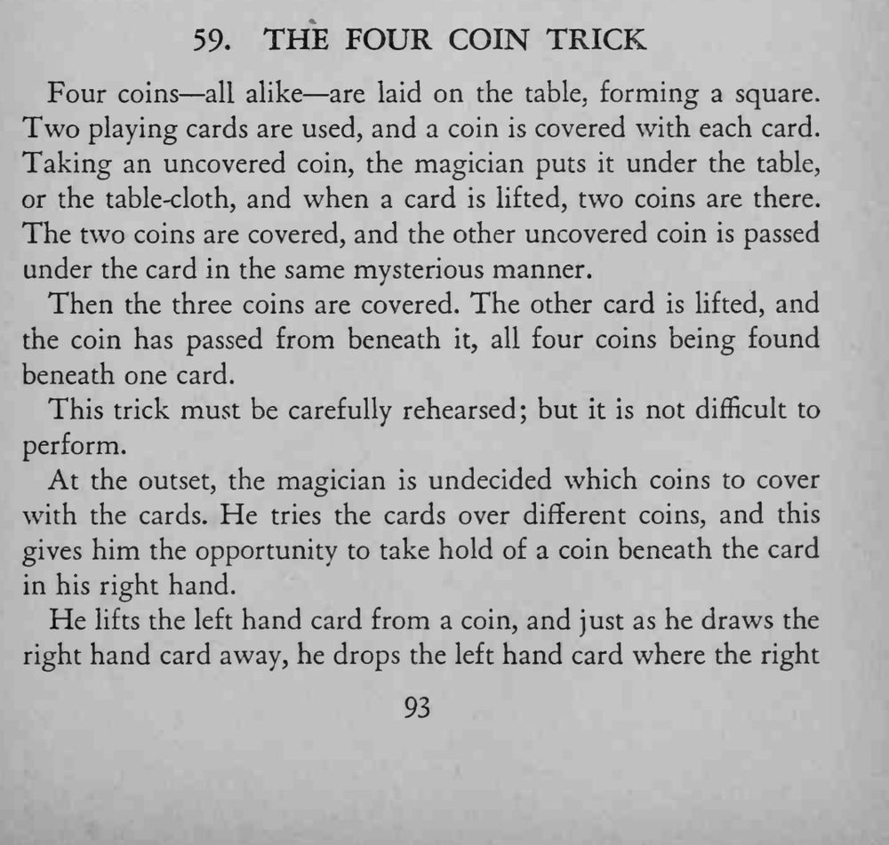
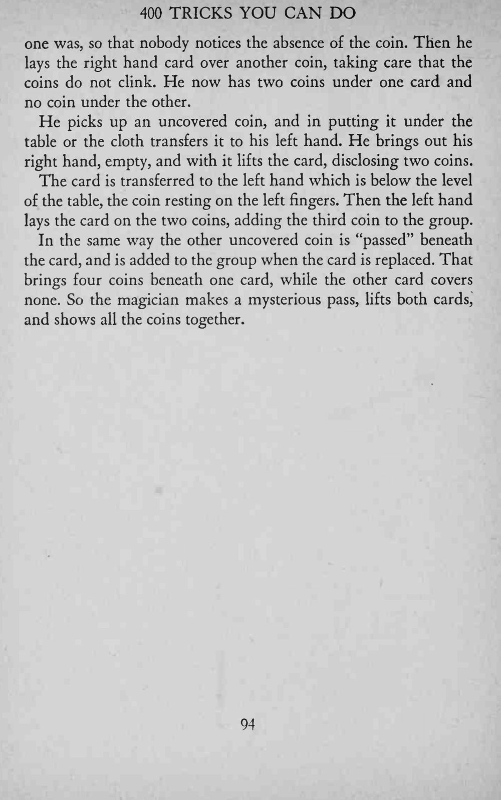

四枚硬币摆成方块，两张牌各盖一枚；剩下的硬币一次次神秘地“穿”到牌下，最后四枚硬币全跑到同一张牌底下。
关键是不让硬币碰响，换牌、加币都要在同一动作里完成，必须反复排练。


Four coins all alike are laid on the table, forming a square. Two playing cards are used, and a coin is covered with each card. Taking an uncovered coin, the magician puts it under the table, or the table-cloth, and when a card is lifted, two coins are there. The two coins are covered, and the other uncovered coin is passed under the card in the same mysterious manner. Then the three coins are covered. The other card is lifted, and the coin has passed from beneath it, all four coins being found beneath one card. This trick must be carefully rehearsed; but it is not difficult to perform. At the outset, the magician is undecided which coins to cover with the cards. He tries the cards over different coins, and this gives him the opportunity to take hold of a coin beneath the card in his right hand. He lifts the left hand card from a coin, and just as he draws the right hand card away, he drops the left hand card where the right one was, so that nobody notices the absence of the coin. Then he lays the right hand card over another coin, taking care that the coins do not clink. He now has two coins under one card and no coin under the other. He picks up an uncovered coin, and in putting it under the table or the cloth transfers it to his left hand. He brings out his right hand, empty, and with it lifts the card, disclosing two coins. The card is transferred to the left hand which is below the level of the table, the coin resting on the left fingers. Then the left hand lays the card on the two coins, adding the third coin to the group. In the same way the other uncovered coin is "passed" beneath the card, and is added to the group when the card is replaced. That brings four coins beneath one card, while the other card covers none. So the magician makes a mysterious pass, lifts both cards, and shows all the coins together.